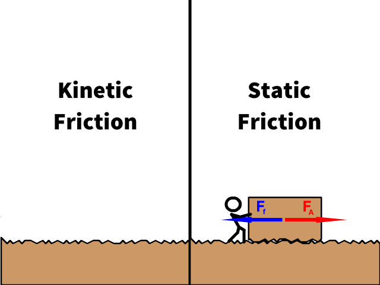
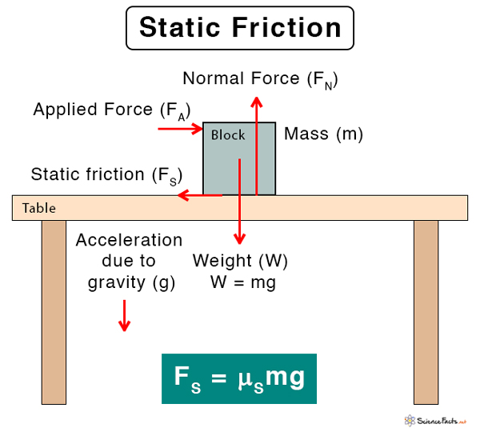

Friction
Friction
The significant impact of friction on a CO2 Dragster's speed in a race cannot be overstated. Friction, the force that resists the relative motion or inclination between two surfaces in contact, influences the Dragster's speed through two primary avenues:
1) Rolling friction with the track (Surface Friction)
2) Air Resistance / aerodynamic friction (Fluid Friction)
Friction impedes wheel sliding, maintaining constant motion
Our exploration begins with the crucial scenario where the Dragster's wheels engage the ground, giving rise to friction—an aspect we shall delve into with a focus on two types: static and kinetic.
Static friction:
Static friction arises when two surfaces remain at rest relative to each other, resisting forces attempting to set them in motion. The formula governing static friction is:
F
(static)
≤(μs
)(N), where each variable adheres to the following definitions:F
(static)
: static frictional force.Static friction acts as a steadfast ally, preventing unintended shifts when one strives for stability (Friction countering inertia). It manifests as resistance when attempting to initiate motion—an inherent quality observed when an object resists movement despite applied force (e.g., F
A
).In essence, static friction is the 'stickiness' between surfaces that thwarts sliding when at rest, akin to a natural brake released only when a force surpasses the resistance, initiating motion.
μ
s
: coefficient of static friction, a dimensionless value specific to the materials in contact.This coefficient quantifies the force required to overcome static friction and induce movement between two surfaces—essentially gauging the 'stickiness' or 'slipperiness' of the static state.
Consider attempting to push a heavy box; the initial challenge arises from static friction. A high coefficient implies a formidable initial resistance to motion.

Now envision the scenario of pushing a stationary object; static friction exerts an opposing force F
f
, thwarting motion until a force FA
prevails, overcoming the resistance and setting the object in motion.N: normal force between the surfaces.
In the static friction formula, N signifies the normal force—a force perpendicular to the surface of contact between two objects. It acts to support the weight of an object resting on a surface, as illustrated:

To elucidate further:
Weight and Normal Force:
When an object rests on a surface, gravity imparts a downward force, the weight (mg, where m is mass and g is gravity's acceleration). Simultaneously, the surface exerts an opposing force—the normal force (N).
Direction of Normal Force:
Normal force is always perpendicular to the surface, counteracting the gravitational force. On a flat surface, it acts directly opposite to gravity.
In the Formula:
In the static friction formula, N determines the maximum static friction between surfaces. This maximum static friction, denoted as μsN, is directly proportional to the normal force N. Reducing static friction involves diminishing this 'push-back' force, necessitating a reduction in N.
In essence, N represents the 'push-back' force opposing motion, and static friction is capped at a maximum value (μsN) contingent on this normal force.
Kinetic Friction:
Kinetic friction surfaces when two interfaces are in motion relative to each other. The kinetic friction formula is:
F(kinetic)=μk(N), where each variable conforms to the following:
F(kinetic): kinetic (or dynamic) frictional force.
Kinetic friction acts as a retarding force, impeding objects in motion. It opposes the direction of motion and is exemplified when attempting to push a heavy object or witnessing brake-induced deceleration in a moving vehicle.
μk: coefficient of kinetic friction, a dimensionless value specific to the materials in contact.
This coefficient gauges the 'stickiness' or 'slipperiness' of surfaces already in motion. A higher μk necessitates more force to maintain steady motion.
To contextualize, imagine sustaining the motion of a heavy box; the coefficient of kinetic friction informs the force required to counteract deceleration and uphold a steady pace.
N: normal force between the two surfaces

In the kinetic friction formula, "N" calculates the frictional force opposing the motion of surfaces sliding past each other. N hinges on the object's weight and acts perpendicular to the surface, influencing the strength of kinetic friction—the force opposing motion in an already moving object.
Reducing Friction:
Through algebraic substitution, we deduce that N (Normal Force) equals mg (Mass x acceleration due to gravity). To diminish Fk and Fs, and consequently friction, reducing the coefficient of friction and the product of mg becomes paramount. This reduction in mass aligns with the mathematical proof supporting the Dragster's time completion.
Reducing the Coefficient:
The coefficients, depicted in the initial image of the friction formula, depend on the pull-back force between surfaces. Proper axle rotation is crucial, as static friction coefficients prevail if the axles don't spin effectively.
Assuming operation on dry concrete, effective axle rotation ensures adherence to kinetic friction coefficients, vital for reducing friction. Notably, μs > μk, emphasizing the need for proper axle spin to minimize friction.
Reducing Product mg:
Since "g" is constant, reducing "m" (mass) is the focal point. Strategies to mitigate friction include:
1. Minimizing Rolling Friction: Focus on factors like track surface quality, wheel type, and Dragster weight to influence rolling friction.
2. Striving for Maximum Speed: Design considerations aim to minimize both rolling and air resistance friction. Wheels feature low-friction materials and engineered designs for optimal performance.
Summary:
Friction, whether in rolling on the track or facing air resistance, exerts a profound impact on a CO2 Dragster's speed. Crafting a dragster to mitigate these frictional forces is pivotal for achieving maximum speed and optimizing race performance.